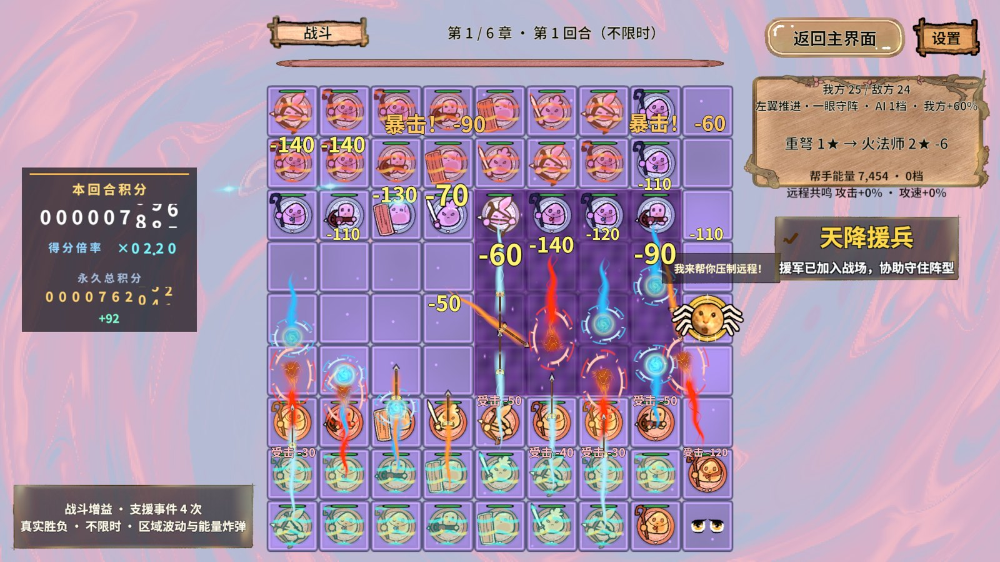
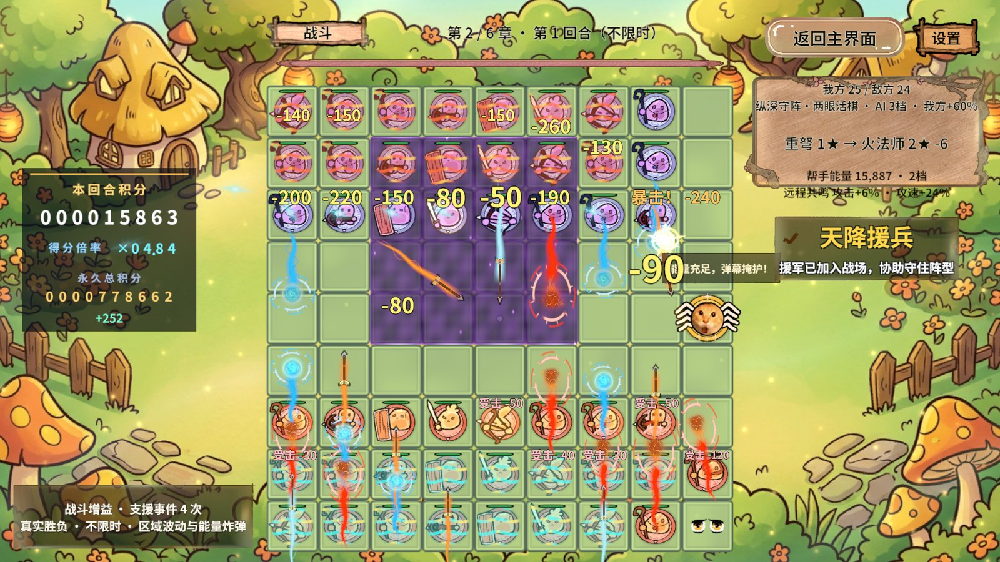
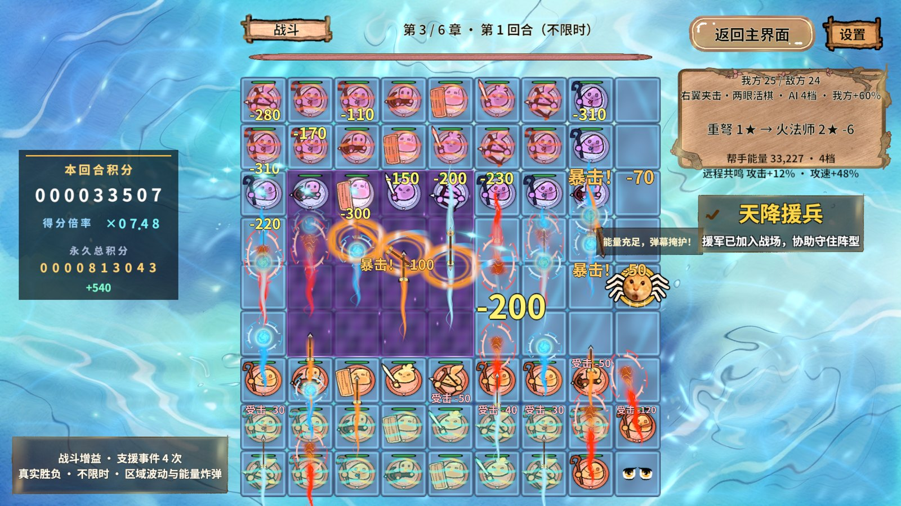
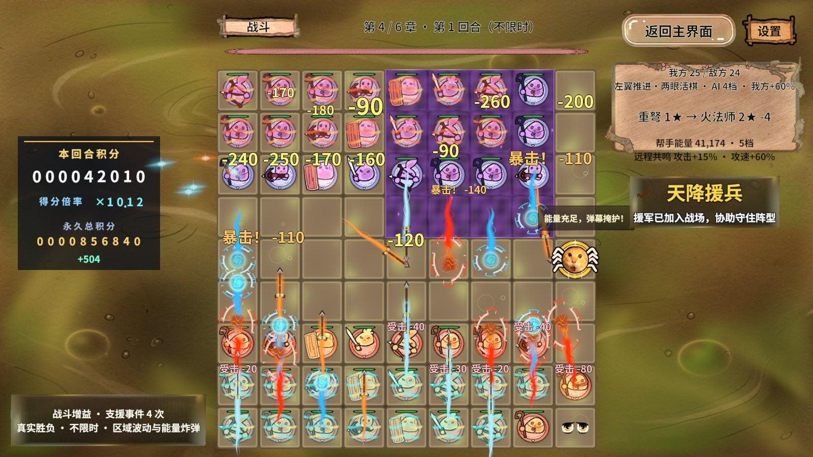
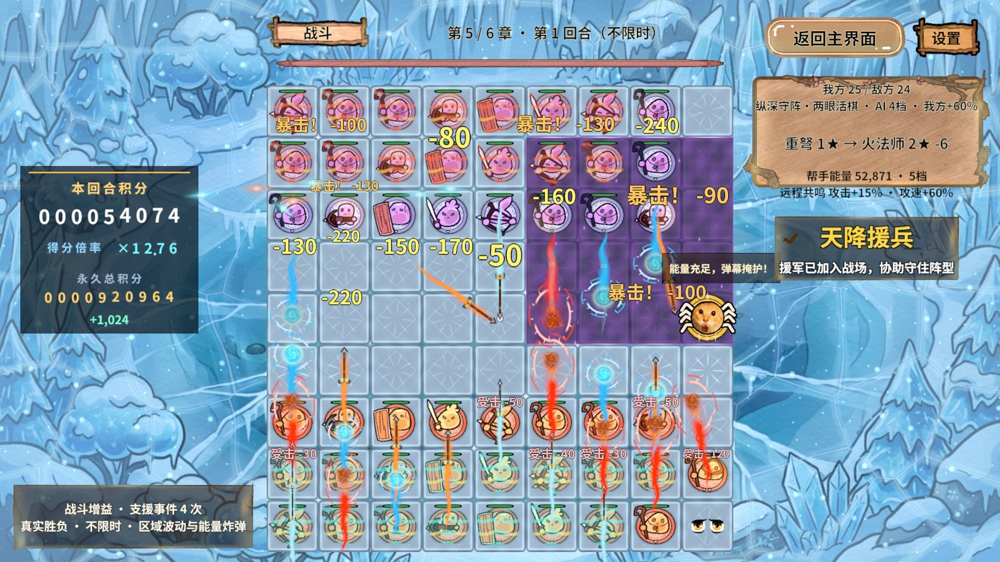
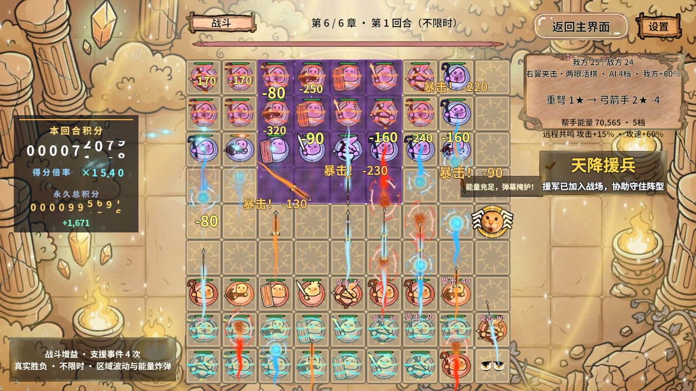
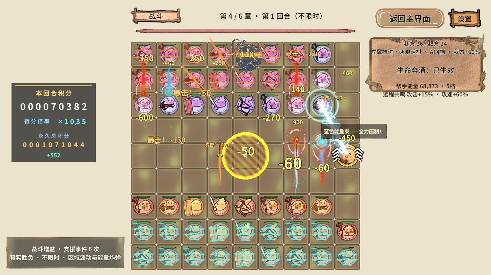

01 · 结论：当前不能验收稳定80～90帧
本机在Unity Editor Game窗口、1920×1080、D3D11、真实PC AB下，关闭普通日志后跑完六章固定输入压测，共9,598帧、120秒稳定采样。平均FPS为63.71～95.42；P95为16.75～28.10ms，六章均超过80 FPS的12.5ms预算。
没有复现“整段平均一直低于30 FPS”，但复测出现大量超过33.33ms的慢帧。报告不能反推用户此前读数错误，也不能把本次短时高帧率当成问题已解决。
| 维度 | 已证实 | 结论边界 |
|---|---|---|
| CPU | EditorLoop、透明绘制、UI批次、飘字与Tween共同占预算；渲染线程等待主线程明显 | EditorLoop不能等同游戏代码；主线程与渲染线程/GPU不能相加 |
| GPU | 第四章背景停绘后GPU中位11.50→3.65ms；第五章完整背景GPU中位9.87ms | 停绘只用于归因；恢复背景后GPU成本恢复，正式画质没有被优化 |
| 内存 | 有效GC分配计数非零；本机可用RAM偏紧；战斗图集/域/包可回收 | Editor计数含工具、字体与采样；无分配调用栈，不能全部归罪玩法；没有证明长期无泄漏 |
报告校正：中断收尾时曾把上一轮30秒结果误列为“90秒持续负载”，该行已撤回。90秒测试未完成，没有有效结果；六章基线与已完成的30秒对照不受影响。后续禁止用旧文件的存在或cleanup字段代替本次运行完成校验。
02 · 环境与测量口径
| 项目 | 本次实际值 |
|---|---|
| 用户确认 | 最初低于30帧发生于Unity Game窗口；测试中没有主动调整电源、窗口或后台程序 |
| 代码 | RevGame faab0ef32a2bb4aeae788c74ffe17f17187dcf8c；工作区有用户修改，非纯净提交 |
| 框架快照 | PACKAGE_VERSION锚点e40f3fa；会话中外部同步于20:52，完整基线始于21:11，未由本次任务修改框架 |
| CPU / GPU | Intel Core i7-12700H（14核/20线程） / Intel Iris Xe，DX11；核显共享RAM，不把系统报告8016MB当专用显存 |
| 内存/屏幕 | 系统约16GB RAM；桌面2240×1400、60Hz；Game渲染固定1920×1080 |
| 模式 | Unity 2022.3.15f1c1图形Play；AB模式；未暂停；Deep Profiling关闭；剧情/积分隔离 |
| 日志 | 采样期间RevLog最低Error，Unity Debug输出过滤到Error；保留异常检测。屏幕上的战斗信息仍保留 |
| 负载 | 复用BattleService.LoadPerformanceScenario；种子1025+章号、双方各24棋、生命×1000、每秒补满。真实攻击/支援/AI推进；支援可补子，30秒段48～50棋 |
| 流程 | StartScene首页→GameFlow进入GameScene→资源就绪→玩家同入口翻完章节剧情→准备完成→开战→2.5秒预热→采样→独立Profiler/截图→正式返回首页 |
| 计时 | RevTask逐帧墙钟间隔；FrameTimingManager只收新时间戳且GPU>0的样本；缺失不是0；GC用有效ProfilerRecorder |
| 干扰控制 | 每帧仅写预留值类型缓冲；CSV格式化、对象枚举、截图、Profiler原始录制均在稳定窗口外。系统计数器2秒一次，少量MCP查询仍可产生离群帧 |
| 同步 | 原QualitySettings.vSyncCount=1、targetFrameRate=-1；主基线临时vSync=0并不限帧，收尾恢复。Editor Game视图另有呈现机制，不能仅由QualitySettings推定实际锁帧 |
| 显示上限 | 当前60Hz屏幕无法显示每秒80～90张独立刷新；80～90可作为渲染吞吐预算，实际显示需更高刷新率屏幕 |
03 · 六章完整画面基线
P95表示95%的帧不慢于该值；平均FPS高不代表稳定。下图金线是80 FPS的12.5ms预算。
| 章 | 帧数/攻击 | 平均FPS | P50 ms | P95 ms | P99 ms | >12.5ms帧占比 | GPU P50/P95 ms | 批次/SetPass |
|---|---|---|---|---|---|---|---|---|
| 1.00 | 1664/1013 | 83.16 | 10.94 | 21.12 | 30.33 | 31.6% | 6.41/8.56 | 66.8/54.1 |
| 2.00 | 1909/1060 | 95.42 | 9.52 | 16.75 | 24.87 | 18.1% | 4.35/6.48 | 67.1/54.1 |
| 3.00 | 1632/1305 | 81.56 | 11.08 | 21.25 | 32.45 | 33.8% | 5.36/7.90 | 67.9/54.5 |
| 4.00 | 1335/1173 | 66.70 | 13.57 | 26.29 | 35.94 | 62.7% | 11.40/13.45 | 67.7/54.4 |
| 5.00 | 1275/1239 | 63.71 | 13.87 | 28.10 | 37.98 | 66.4% | 9.87/11.36 | 68.4/55.1 |
| 6.00 | 1783/1296 | 89.12 | 10.36 | 19.04 | 26.24 | 26.1% | 5.89/7.64 | 67.4/54.2 |
六章稳定窗口均保持48颗存活棋；GPU有效样本数分别为1419、1654、1400、1130、1100、1524。截图在随后独立取证阶段拍摄，画面可能已发生支援补子，不能用截图倒推采样期棋数。
04 · CPU：先处理渲染/UI/反馈，并分清Editor开销
| Profiler标记 | 第四章平均包含子调用时间 ms/帧 |
|---|---|
| 游戏主循环 | 10.50 |
| 编辑器循环 | 8.01 |
| 相机渲染提交 | 3.37 |
| UGUI批次更新 | 2.21 |
| BoardView.LateUpdate | 1.17 |
| DOTween更新 | 0.79 |
| 框架Timer驱动（包含业务回调） | 0.57 |
以上来自独立2.5秒Profiler录制，不与无Profiler的FPS混算；父子标记有重叠，不能加总。第四章渲染线程Gfx.WaitForGfxCommandsFromMainThread约7.91ms/帧，表示等主线程供给，不是GPU计算用了7.91ms。
证据指向：相机/透明队列提交、Canvas批次更新、BoardView反馈LateUpdate和Tween应优先细分。Timer整段约0.57ms，包含战斗规则和其它计时回调，当前没有证据支持先大改AI算法。也不能用20线程总CPU占用不高来排除主线程瓶颈。
具体修改：HUD按脏字段更新，把稳定底板与滚动积分/动态文字分离评估；避免10Hz无条件拼接整组文本、重复Split。为反馈排队、投影矩形、文字摆位分别加ProfilerMarker，在不减少20/35/16表现预算的前提下缓存不变结果。检查池对象频繁SetParent/激活及动态字体字形重建，评估固定数字字形方案；继续保留RevPool、owner与回收代次检查。
参考代码：BattleHudPanel.cs:133、BoardView.Feedback.cs:213、BattleEffectView.cs。这些是与采样热点一致的改动候选，不是已证明每项必然节省固定毫秒的承诺。
05 · GPU与对照：第四章背景是明确热点
| 分段 | 平均FPS | P95 ms | P99 ms | GPU P50 ms | CPU主线程P50 ms | 批次 | 攻击数 |
|---|---|---|---|---|---|---|---|
| 第四章完整画面30秒 | 60.19 | 31.12 | 54.50 | 11.50 | 7.72 | 69.28 | 1,998.00 |
| 第四章背景停绘30秒 | 83.19 | 21.61 | 30.97 | 3.65 | 6.04 | 68.15 | 1,998.00 |
| 保留原同步设置30秒（异常快样本） | 146.75 | 11.48 | 21.79 | 3.62 | 3.56 | 68.79 | 1,998.00 |
| 随后完整画面30秒 | 53.52 | 39.52 | 70.14 | 11.05 | 7.44 | 69.46 | 1,998.00 |
| HUD停绘30秒 | 53.36 | 36.05 | 54.63 | 12.12 | 6.36 | 51.28 | 1,998.00 |
第四章30秒背景停绘/完整恢复均产生1998次攻击、存活棋48～50，业务负载匹配。GPU中位从3.65ms回到11.50ms，完整恢复后平均FPS降回60.19。背景停绘得到的83.19 FPS不能交付为正式画质优化。
Chapter04_Swamp_Shader.shader的片元函数为全屏每个像素计算九组SwampVent，包含exp、pow、sin/cos、噪声与双相原画采样。1080p下单Pass仍可能昂贵；“只有一次Draw Call”不意味着便宜。
优先建议：先保留原画与视觉层次，把九处排气/毒雾改为有界局部覆盖或预计算噪声/流场贴图，尽量合并公共计算；选择低成本等价函数并验证透明排序、UV与AB Shader。第五章也有约9.87ms的GPU中位，随后单独定位冰面背景与格面。降低整个画面分辨率、删除特效、直接关闭背景均不作为本项目默认修复。
HUD停绘令批次约69→51、主线程计时下降，但平均FPS没有同步提高。它只能证明部分UI成本存在；当GPU/Editor/系统调度仍卡住整帧时，单独追求批次数字不能保证收益。
06 · 内存：有分配与系统压力，未见战斗租约累积
| 章 | 平均GC分配 KiB/帧 | 单帧最大 KiB | Gen0回收次数 |
|---|---|---|---|
| 1.00 | 40.42 | 691.33 | 1.00 |
| 2.00 | 36.51 | 301.17 | 1.00 |
| 3.00 | 41.66 | 363.87 | 1.00 |
| 4.00 | 45.62 | 423.17 | 0.00 |
| 5.00 | 55.43 | 8,288.41 | 1.00 |
| 6.00 | 39.35 | 338.40 | 1.00 |
GC计数器有效且返回正值，不能宣称“零GC”。计数来自Editor整帧，包含编辑器、框架/业务、采样工具及偶发查询；当前未导出GC.Alloc完整调用栈，不能把约37～57KB/帧全算到游戏。长帧与GC没有逐帧因果对齐，峰值也不能直接称为GC停顿。
起始系统可用物理内存约1006MiB，Unity进程工作集约2364MiB；后续一次进程观测约2292MiB工作集/3489MiB私有提交。系统计数器较早混合窗口包含编译与等待，观察到可用1651～2248MiB及页面输入峰值；该窗口不能单独证明“战斗换页导致掉帧”。核显共享内存，后台多进程会进一步压缩余量。
| 返回点 | AB包 | 战斗Logic | PieceFrames引用 | Texture对象 | Material对象 | Mono已用 MiB | Unity保留 MiB |
|---|---|---|---|---|---|---|---|
| 六章基线 | 17.00 | 0.00 | 0 | 801.00 | 72.00 | 611.61 | 1,040.80 |
| 第四章背景停绘30秒 | 17.00 | 0.00 | 0 | 801.00 | 72.00 | 611.38 | 1,332.80 |
| 第四章完整画面30秒 | 17.00 | 0.00 | 0 | 801.00 | 72.00 | 610.39 | 1,433.80 |
| 保留原同步设置30秒（异常快样本） | 17.00 | 0.00 | 0 | 801.00 | 72.00 | 610.51 | 1,398.80 |
| 随后完整画面30秒 | 17.00 | 0.00 | 0 | 801.00 | 72.00 | 613.95 | 1,430.80 |
| HUD停绘30秒 | 17.00 | 0.00 | 0 | 808.00 | 73.00 | 617.61 | 1,381.86 |
同一会话前三次完整退出，包数均回17、Logic回0、PieceFrames引用回0、Texture数801、材质72；本次新增清理断言同时确认BoardView销毁。后续Editor全局对象有小幅波动（例如808纹理/73材质），来源尚未归因，不能据此宣称业务泄漏或长期完全无泄漏。
全局Texture枚举包含编辑器图标、GameView RenderTexture、字体及已加载资源；不能等同战斗贴图或显存。Profiler清帧会释放录制缓存，因此Unity总已分配内存下降不能全部当成资源优化收益。各内存API口径不可相加；Unity Mono进程内存API返回0已标记-1，进程数据取Windows侧。
建议：在编辑器内查看GC分配调用栈，报告仅记录归因摘要，不导出Profiler录制或内存快照；区分数字字符串/闭包/字体/工具。用同一会话10次往返比较资源引用、对象类别与保留路径。若仅保留池稳定，不在热帧强行GC或UnloadUnusedAssets；在流程空闲点按既有引用计数释放。
07 · 到80～90帧的修改顺序与验收预算
| 优先级 | 行动 | 为什么先做 | 完成证据 |
|---|---|---|---|
| P0 | 固定Editor Game窗口、分辨率、后台负载与电源；补CPU/GPU频率/温度记录 | 同代码出现53～147 FPS差异，先排除观测/运行状态变化 | 同输入连续三轮，报告分位数与全部离群帧，保留EditorLoop；独立Player仅作交叉定位 |
| P1 GPU | 重写第四章全屏沼泽热点的计算方式，随后测第五章 | 第四章背景约占8ms GPU差值，已经挤满11.1～12.5ms预算 | 完整背景/棋盘/反馈视觉保留；相同AB和种子对照，GPU p95建议≤8ms |
| P1 CPU | UI脏更新、动态内容隔离、飘字分段标记/缓存、字体稳定化 | UI/反馈/渲染是实际主线程热点 | 独立计时与画面回归共同通过；不只看Draw Call下降 |
| P2 内存 | 在编辑器内定位分配来源，只记录归因摘要，优化实际高频分配并验证持有链 | 每帧分配与RAM余量影响慢帧风险 | 稳定段分配下降可归因；10次往返无持续增长；不以强制GC刷数字 |
| 发布门禁 | 真实PC AB冷启动→六章→密集攻击→多次回退→持续10分钟 | 短时平均FPS不足以保证低端机稳定 | 80FPS：p95≤12.5ms；90FPS：p95≤11.11ms；建议p99≤16.67ms，并报告>33.33ms比例、峰值和热状态 |
上述GPU/CPU拆分预算是优化验收建议，不是这轮已达到的数据。目标应在这台电脑的Game窗口单独验收；同时增加Windows独立Player对照以区分Editor成本，但不能用Player通过替代用户指定的Editor通过。
07.1 · P0：先让前后两次测量可比较
修改位置：Assets/Editor/RevGame/GameBattleDeviceProfileChecks.cs及Assets/Editor/RevGame/ResourceBuild/GameDeviceProfileAutomation.cs（本机采样工具，尚未随本报告提交）。以下源码路径均相对RevGame_Client/UnityProject/RevGame.Unity/。本节是待执行方案，本次仅更新报告，未实施生产性能优化。
- 为每次运行增加唯一runId；把Git提交、AB版本、章节、种子、时长、实际开始/结束时间、完成状态与清理结果写入摘要。读取结果时逐项匹配请求；未完成、旧文件或时长不足只能记失败/未完成。此前90秒持续负载没有有效完成证据，不能作为基线。
- 固定Game窗口1920×1080、可见/焦点状态、Editor布局、图形API、VSync和targetFrameRate，记录充电/性能模式、后台占用及CPU/GPU频率和温度；传感器不可用标记缺测。用户确认没有主动调整环境，53～147FPS波动的原因仍待定位，不能直接归因于电源或同步开关。
- 计时前关闭性能敏感的打印日志，记录并恢复原设置；业务失败仍通过结构化状态和断言可见。预热、正式采样、截图/GIF分段，计时期间不截图、不深度分析、不导出Profiler录制数据或内存快照。需要查看Editor分配调用栈时单独运行，只把摘要写进报告。
- 沿用六章固定48棋、种子1025+章号、高生命倍率与补满条件。每项变更采用相同输入的A→B→A复测，各至少三轮；记录攻击数、存活数与资源状态，检查负载等价，展示全部轮次，不能只选最快一次。
验收：每份数据能对应唯一完成运行，异常轮次有解释或明确标记未归因；不能把异常快样本当成优化收益。计时帧与历史Profiler区段分开比较；PlayerLoop、Camera.Render等父子标记不相加，EditorLoop也不能直接从整帧时间中扣除。
07.2 · P1 GPU：先优化第四章全屏背景的像素计算
修改位置：Assets/GameShader/Background/Chapter04_Swamp_Shader.shader的SwampFrag/SwampVent；涉及图集UV与绑定时核对Assets/GameScripts/View/Scene/GamePresentation.cs。实测背景停绘使GPU中位数11.50→3.65ms、FPS 60.19→83.19，而批次69.28→68.15，优先检查像素计算成本。7.85ms是停绘对照差值，并非可无损回收的承诺。
- 先做保持效果的公共表达式复用：九个SwampVent逐项核对，提取相同时间、坐标变换与噪声结果，避免重复求值；编译器可能已做部分优化，必须测GPU结果确认收益。
- 第二个独立候选：将适合预计算的噪声/流场换为小尺寸、可平铺贴图，保留原画与双相流动。比较减少算术与增加纹理采样/带宽的净收益；核显对共享内存带宽敏感，不能默认查表必定更快。
- 第三个独立候选：把气泡/毒雾的局部效果限制到实际覆盖区域，保留必要的全屏基础层。对比增加的透明过绘、批次和材质成本；若更慢则不合入。先不把降低Game分辨率、关闭背景或减少战斗负载作为合格结果。
- 纹理若为Sprite，走GameSpriteAtlasBuild唯一V2图集；若为非Sprite噪声采样纹理，明确资源类型并按资源规范打包。加载走RevResManager，不逐帧克隆材质。用真实PC AB冷启动检查UV、透明边缘、画面覆盖、动效节奏与重入。
验收：完整视觉、相同分辨率与负载下，GPU P50/P95和整帧P95在重复轮次中改善；GPU P95≤8ms作为阶段预算。第四章通过后再单独定位第五章背景、格面和特效：第五章63.71FPS、GPU P95 11.36ms提示GPU压力，但尚无其背景停绘对照，不能提前认定根因相同。
07.3 · P1 CPU：把HUD全量刷新改成字段变化刷新
修改位置：Assets/GameScripts/UI/Panels/Battle/BattleHudPanel.cs的OnRefreshView及现有0.1秒刷新入口。历史独立Profiler段UGUI.Rendering.UpdateBatches平均2.21ms；它包含其他UI，不能全部归到HUD。HUD停绘虽将批次69.46降到51.28，FPS仍53.52→53.36，说明降批次本身不足以解决整帧瓶颈。
- 保留现有10Hz合并入口作为第一步，仅比较字段值；阶段/章回/阵型/人数/支援状态/日志发生变化才格式化并设置对应控件。避免先拼完整字符串再比较，否则仍有临时分配。
- 将
EnemyFormation.Split('（')[0]改为源阵型变更时解析并缓存；文字显示位数未变化时不更新倒计时，进度条沿用目标值变化才更新的约束。Boss显示开关仅在状态切换时SetActive，避免重复刷新整组对象。 - 如果脏更新后Canvas重建仍显著，再把动态分数/血条与静态底板做有边界的Canvas隔离实验；同时检查额外绘制批次、RectMask和透明顺序，不能给每个控件都加Canvas。
- 缓存归面板持有，在关闭/重开、章回切换、数据替换时失效；继续遵守OnBindView装配、OnRefreshView落屏、交互转发。若增加事件订阅，使用现有owner生命周期清理，首次打开必须全量落屏。
验收：分别记录HUD刷新耗时、UGUI重建耗时、实际文本写入次数与分配摘要；验证生命、分数滚筒、支援、阶段、Boss、结算及重开不漏更新。CPU热点下降必须与整帧P95一起报告；无GPU收益时不声称整体已达80FPS。
07.4 · P1 CPU：细分飘字与动画成本，再改真正热点
修改位置：Assets/GameScripts/View/Board/BoardView.Feedback.cs的LateUpdate、ArrangeFloatingText、队列flush，以及Assets/GameScripts/View/Combat/Effects/BattleEffectView.cs。历史BoardView.LateUpdate平均1.17ms、DOTween.Update 0.79ms、RevTimerDriver.Update 0.57ms；后者包含业务回调，不能直接认为计时器内核慢。
- 分别测待播队列、弹道发射、文字屏幕投影、摆位/遮挡、文字网格与Tween更新。当前已将20个文字矩形提到两两比较之外，ArrangeFloatingText的25个候选也已有预留矩形复用，不能把这些现有优化再算作新增收益。
- 只缓存确实不变的数据：组件引用、稳定的字体度量、同帧重复投影。相机、分辨率、位置、缩放或文字变化时更新；漂移/振动/淡出期间继续维护遮挡与透明度，不能降低检查频率导致文字相互覆盖。
- 核对实际调用栈后再处理重复SetParent/激活、字体首次扩容或每条反馈闭包。字体预热放在采样前并单独报告首次成本；保持现有每条飘字单Tween及积分动画合并，避免新增多段动画序列。
- 继续维持20文字/35弹道/16近战和有界待播；使用RevPool及对象代次检查，伤害先由模型结算，表现回收/超限不影响数值。不能为提帧删减攻击、支援或绕过气眼/补子规则。
验收：同屏密集反馈下各段CPU耗时及长帧减少，移动/缩放时文字仍可读；回池后迟到回调、退出/重进、Boss及被围动画正确。GPU实例化、动态合批和UGUI合批分别实测，不把Shader开关当作通过证据。
07.5 · P2 内存：先归因分配，再检查重复进入后的保留量
修改位置：优先审查上述HUD/反馈热路径；资源生命周期核对Assets/GameScripts/View/Resources/GameSpriteAtlasService.cs及战斗退出的既有释放链。当前Editor整帧约36.5～55.4KiB/帧分配，不等于全部来自游戏；约1006MiB系统可用内存提示余量紧张，但尚未证明战斗换页是掉帧原因。
- 单独在Editor中查看分配来源，将业务、编辑器、采样工具和首次字体扩容分开记录摘要。只针对确认的字符串、闭包、临时集合修改；查询缓冲由调用方持有、清理引用，不引入共享全局可变草稿。
- 每次进出战斗使用同一检查点，比较第1、5、10轮的Mono、Unity保留、进程工作集、纹理/材质类别、AB包、Logic和图集引用。暖池允许稳定保留，持续增长要沿事件、Tween、池和图集持有关系解释；各类内存数字不可相加。
- 保持RevResManager成对释放与RevPool归属。只在流程允许的空闲点回收资源，不在热帧强制GC或UnloadUnusedAssets刷低数字。系统内存压力对照与业务改动分开测试，不能通过关闭后台后把改善全记为代码收益。
验收：实际高频分配下降且能指出来源；退出时战斗Logic与PieceFrames引用归零、BoardView销毁；第5～10轮暖池稳定后无未解释的持续增长。当前前三次退出的引用恢复是短期证据，不代替10轮或长时间验证，也不承诺零GC。
07.6 · 合入顺序、预算与最终复测清单
建议拆成独立提交：测量可靠性 → 第四章Shader公共计算 → 噪声/局部效果候选逐一对照 → HUD字段脏更新 → 反馈热点 → 已确认的分配与释放问题。每一步保存前后摘要与必要截图，变慢或画面/规则不符就撤回该候选；本项目框架是快照，不能顺手修改Assets/Revolution，若确认框架瓶颈需回源仓库验证后重新导出。
- 阶段预算：建议主线程P95≤8ms、GPU P95≤8ms，为Editor与呈现波动留余量；两者并行且标记存在嵌套，不能相加或仅凭拆分预算宣称整帧达标。
- 80FPS验收档：各章各轮平均FPS≥80、整帧P95≤12.5ms；90FPS验收档：平均FPS≥90、P95≤11.11ms。两档均建议P99≤16.67ms，同时列出超过12.5/16.67/33.33ms的帧数比例与最大帧耗时。P95目标只代表95%帧达预算，不等于每帧保底80/90。
- 短测：固定Editor Game窗口，真实PC AB冷启动，六章各三轮、相同预热与采样时长；记录负载和温度/频率，不把六章平均掩盖第四/五章失败。
- 持续与回归：随后完成10分钟持续战斗，按分钟展示帧时间与热状态，补Boss技能峰值、10次进出、首次界面可画和资源释放。涉及Shader/资源时补真实AB、UV/动画和相应平台编译；涉及规则时运行既有规则/战术回归。所有入口先发现实际注册能力。
- 交付格式：HTML记录每项改动、版本、前后数据、画面对照、通过/失败/未测及收尾状态；只保留必要截图/GIF，不导出Profiler录制、内存快照或ZIP。独立Player仅辅助区分Editor成本，本机Game窗口才是本次目标的验收对象。
当前判断：先做第四章GPU像素成本与HUD脏更新最有依据；达到稳定80～90FPS仍需完整复测。现有六章P95为16.75～28.10ms，距12.5/11.11ms仍有明显差距；这些建议没有已验证的收益数值，不能承诺改完必达标。
08 · 验证、失败记录与清理
| 检查 | 实际结果 |
|---|---|
| 编译 | 新Editor采样器与固定RevMCP桥编译通过；运行期重新发现真实入口 |
| 业务负载 | 六章全部满足存活≥40、攻击≥40；实际基线每章48棋、1013～1305次攻击；不是空场FPS |
| 帧率 | 六章均未达到稳定80～90 FPS要求；未放宽阈值把采样成功当性能成功 |
| 异常 | 有效运行报告errors=0；首次失败完整保留并披露 |
| 回收 | 各已完成段cleanup=true；经GameFlow回Home，IsTransitioning=false，域/图集引用归零 |
| 临时状态 | 日志级别、Unity日志过滤、VSync、targetFrameRate、Profiler启用和分区恢复；归因隐藏对象在finally恢复 |
| 未测 | 独立Player、Android、完整60回合通关、Boss全部技能峰值、10分钟热稳态、功耗/温度、分配调用栈；无这些层面的通过结论 |
| 阶段 | 首次原因 | 处理 |
|---|---|---|
| 连接 | 默认python为3.7；Path.unlink(missing_ok)不支持 | 使用本机Python3.13并建立常驻RevMCP stdio |
| 第一次夹具 | 隔离Play已持有积分租约，新夹具重复申请被拒绝 | 复用StoryProgress隔离状态，仅释放自己取得的租约 |
| 第二次夹具 | 章节剧情锁住准备时钟，等待超时 | 通过GameFlow.AdvanceStory玩家同入口翻完剧情，再等待PreparationGranted |
| 首次有效章之后 | Profiler有空名称标记，字典汇总异常 | 保留原始raw和有效逐帧样本；空名称单独记账后完整重跑 |
本轮新增文件仅在Assets/Editor/RevGame，复用RevTask、RevServices、RevEvent、RevResManager与现有BattleService夹具。没有改框架快照，没有改生产战斗数值、Shader、资源包或玩家进度。工作区外部框架同步和tools/sync-framework.ps1修改原样保留。
09 · 真实截图与动图
原图1920×1080，交付JPEG宽1600；GIF宽720。仅缩放压缩，未裁剪、拼接或补画。所有截图在性能窗口外采集。















10 · 复测入口与证据位置
保持当前项目Unity已打开，使用RevMCP常驻stdio：rev_mcp.py --project <RevGame.Unity绝对路径> serve。先discover，记录场景/dirty/Play与错误；隔离启动使用game.story.test-arm {"flags":3}后editor.play，重发现运行期能力。
target: editor
action: game.device-profile.begin
arguments: {"label":"baseline","chapter":0,"seconds":20}
action: game.device-profile.state
arguments: {}
开始返回“运行中”不代表通过。等状态完成后核对Temp/DeviceProfile/baseline/result.json中的6行负载、error/errors和cleanup；性能需单独判读P95。label支持baseline/repeat/background-off/hud-off/original-sync，chapter=0测六章或1～6测单章，seconds=10～90；背景/HUD归因必须单章。固定标签会覆盖该目录，重跑前先复制证据。
本轮已产生的原始JSON/CSV/Profiler与失败记录在.codex/work/perf-2026-10-29/（忽略目录，仅本机保存，不随仓库或单独HTML流转）。未生成ZIP。用户2026-10-29更新：后续不再导出Profiler录制数据；新增采样器已取消自动录制和SaveProfile，仅保留轻量性能摘要与画面，变更尚未在Unity重新编译运行。分享报告时同时携带同级“本机战斗性能诊断_2026-10-29_素材”目录。正常收尾应退出本次Play并调用game.story.test-disarm；本次中断后的最终收尾未取得桥接成功响应，不能声称这些最后动作已验证。